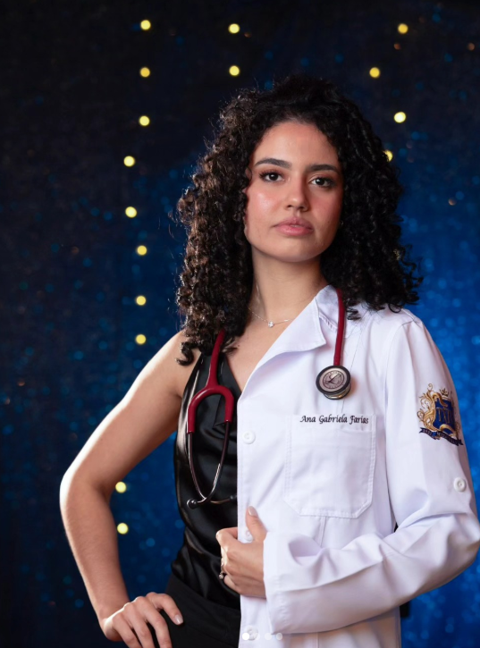

Olá, eu sou a
Médica • Cuidado Humanizado • Curitiba — PR
Dedicada a oferecer um atendimento acolhedor, ético e de excelência, promovendo saúde e qualidade de vida aos meus pacientes.

Sou a Dra. Ana Gabriela Da Silva Farias, médica graduada pela Faculdades Pequeno Príncipe (FPP), uma das instituições mais renomadas do Paraná na área da saúde.
Ao longo da minha trajetória acadêmica, desenvolvi uma profunda paixão pela medicina centrada no paciente. Acredito que o cuidado médico vai além do diagnóstico — é sobre acolher, ouvir e construir uma relação de confiança com cada pessoa que busca atendimento.
Durante a graduação, tive a honra de presidir a LiRadio-FPP (Liga Acadêmica de Radiologia), onde desenvolvi habilidades em liderança, gestão de projetos e aprofundei meus conhecimentos em diagnóstico por imagem.
Faculdades Pequeno Príncipe
Curitiba — Paraná
Cuidado humanizado e acolhedor
Presidente da LiRadio-FPP
FPP — Faculdades Pequeno Príncipe
Formação completa em Medicina com ênfase em atendimento humanizado, prática clínica e diagnóstico. Graduada por uma das instituições de saúde mais conceituadas do Paraná.
Liga Acadêmica de Radiologia
Liderança na Liga Acadêmica de Radiologia das Faculdades Pequeno Príncipe. Gestão de projetos acadêmicos, organização de eventos e atividades de extensão na área de diagnóstico por imagem.
Atendimento clínico completo, com foco no diagnóstico, prevenção e tratamento de diversas condições de saúde.
Promoção da saúde e prevenção de doenças, com acompanhamento personalizado e orientação para hábitos saudáveis.
Conhecimento aprofundado em radiologia e métodos de diagnóstico por imagem adquirido na LiRadio-FPP.
Abordagem centrada no paciente, criando um espaço acolhedor e seguro para cada consulta.
Estou pronta para cuidar da sua saúde com atenção e dedicação. Entre em contato para agendar sua consulta.